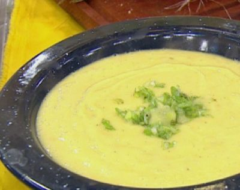

Las mejores 37 ideas de sopas caseras | sopas caseras, recetas de comida, recetas para cocinar

sopas caseras
Collection by Magaly de la Fuente
37 Pins • 68 Followers Mexican Food Recipes Beef Recipes Soup Recipes Cooking Recipes Healthy Recipes Ethnic Recipes My Colombian Recipes Colombian Food Colombian Lentils RecipeSopa de Lentejas con Carne | My Colombian Recipes
· 10 reviews ·Las sopas de lentejas son una de mis comidas favoritas para el clima frío. Me encanta tener un tazón en la nevera para comer al almuerzo o la comida. Me gusta sobre todo poder hacer una comida completa con ingredientes que siempre tengo a la mano en mi nevera y despensa. Esta Sopa de Lentejas […]
Raw Food Recipes Veggie Recipes Mexican Food Recipes Soup Recipes Vegetarian Recipes Cooking Recipes Healthy Recipes Sopas Light Spinach SoupSopa de brócoli Y espinaca con crutones
· 14 reviews · 35 minutes ·Esta sopa es super fácil de hacer. Es super nutritiva y 100% vegana. Esta sopa es perfecta para personas alérgicas a los lácteos.
Mexican Food Recipes Soup Recipes Cooking Recipes Healthy Recipes Ethnic Recipes My Colombian Recipes Colombian Cuisine Peruvian Recipes Comida LatinaSopa de Arroz con Costilla | My Colombian Recipes
· 8 reviews ·La temporada de sopas ha llegado y estoy celebrando con una sopa muy sencilla que es muy popular en los hogares colombianos. Cuando hice esta sopa hace un par de meses, me retuve en publicarla, ya que era la mitad del verano. Después de todo, ¿quién quiere comer sopa caliente cuando está a noventa grados […]
Veggie Recipes Soup Recipes Cooking Recipes Vegan Vegetarian Vegetarian Recipes Healthy Recipes Sopas Light Love Food Food PornCrema de garbanzos y calabaza | Delantal de Alces
· 4 reviews ·Esta crema de garbanzos y calabaza es fenomenal para los días de invierno. Los garbanzos nos aportan proteínas y calcio, y la calabaza es muy rica en fibra y antioxidantes.
Soup Recipes Vegetarian Recipes Healthy Recipes Red Vegetables Latin American Food Chowder Soup Cream Soup Mo S Queso MozzarellaCrema de tomate con queso mozzarella y albahaca | Receta en TELVA.com
Descubre como preparar paso a paso la receta de Crema de tomate con queso mozzarella y albahaca. Te contamos los trucos para que triunfes en la cocina con Sopas/Cremas para chuparse los dedos
Colombian Dishes My Colombian Recipes Colombian Cuisine Colombian Sancocho Recipe Mexican Food Recipes Soup Recipes Cooking Recipes Healthy Recipes Ethnic RecipesSancocho Antioqueño o Paisa | My Colombian Recipes
El Sancocho es uno de los platos clásicos de la cocina tradicional colombiana y es una sopa popular para los fines de semana. Tenemos diferentes variaciones de esta sopa en Colombia y América Latina, pero el concepto es el mismo. Una sopa espesa, sabrosa y abundante, casi un guiso, hecho con tubérculos, maíz, pollo, pescado […]
Veggie Recipes Baby Food Recipes Mexican Food Recipes Soup Recipes Vegetarian Recipes Cooking Recipes Healthy Recipes Ethnic Recipes Sopas LightCrema de lentejas y zanahoria | Delantal de Alces
· 13 reviews ·Receta de crema de lentejas y zanahoria. Un plato vegano genial, lleno de proteínas, hierro y vitaminas. Ideal para tomar bien calentita en invierno.
Kitchen Recipes Soup Recipes Cooking Recipes Healthy Recipes Diet Recipes My Favorite Food Favorite Recipes Chowder Soup Good FoodSopa de zanahoria y apio. Receta
Rica y saludable receta de una sopa de zanahoria y apio. Con fotos del paso a paso y consejos de degustación
Fish Recipes Mexican Food Recipes Great Recipes Soup Recipes Vegan Recipes Cooking Recipes Costa Rican Food Kids Meals Easy MealsSopa marinera con Thermomix
Sopa marinera con Thermomix. Recetas de pescado para niños. Receta fácil de sopa marinera. Aunque yo siempre hago esta sopa marinera con la thermomix, también s
Baby Food Recipes Mexican Food Recipes Snack Recipes Cooking Recipes Healthy Recipes Peruvian Cuisine Peruvian Recipes Food Cravings Diy Foodcrema de zanahoria
crema de zanahoria , originalmente cargada por bmoreno2000mx . ingredientes: 1/2 Kilo Zanahorias grandes (aproximadamente 5-7 zanahorias)
Pureed Food Recipes Healthy Diet Recipes Healthy Soup Veggie Recipes Soup Recipes Vegetarian Recipes Cooking Recipes Burger Recipes Food MenuCrema de lentejas y zanahoria | Delantal de Alces
· 13 reviews ·Receta de crema de lentejas y zanahoria. Un plato vegano genial, lleno de proteínas, hierro y vitaminas. Ideal para tomar bien calentita en invierno.
My Colombian Recipes Colombian Cuisine Corn Soup Recipes Lunch Recipes Healthy Recipes Latin American Food Comida Latina Creamy Corn Soups And StewsCrema de Mazorca | My Colombian Recipes
· 11 reviews ·En la zona andina de Colombia, el maíz es muy popular y lo usamos en muchas de nuestras recetas. Esta receta de sopa de maíz es un muy fácil de hacer, rica y cremosa. Esta Crema de Mazorca era una de mis sopas favoritas cuando era niña. Mi mamá solía servirla para el almuerzo con […]
Authentic Mexican Recipes Mexican Food Recipes Soup Recipes Cooking Recipes Healthy Recipes Ethnic Recipes Sopas Light Lunches And Dinners MealsSopa de avena y espinacas | Cocinar en casa es facilisimo.com
My Colombian Recipes Colombian Cuisine Kitchen Recipes Soup Recipes Cooking Recipes Recipies My Favorite Food Favorite Recipes Healthy RecepiesSopa de Avena
This is one of the most hearty and delicious soups of all. In my family we normally accompany it with a banana or a piece of avocado. It's better known
Healthy Fruits Healthy Salads Healthy Smoothies Fruits And Veggies Healthy Recipes Avocado Pasta Mozzarella Chicken Spinach Soup Mexican Food RecipesCrema de Espinacas Fácil y Ligera
Las mejores recetas de cocina - kiwilimon
New Recipes Soup Recipes Cooking Recipes Drink Recipes Vegetarian Soup Vegetarian Recipes Colombian Cuisine Colombian Recipes Puerto Rico FoodSopa de Platano
This great soup is very easy to cook and does not require many ingredients. In just a few minutes you'll enjoy a rich dish. It's perfect for a mid-week
Privacy